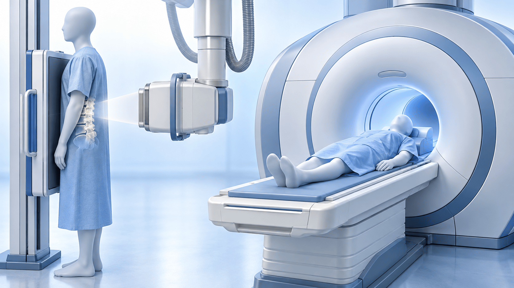
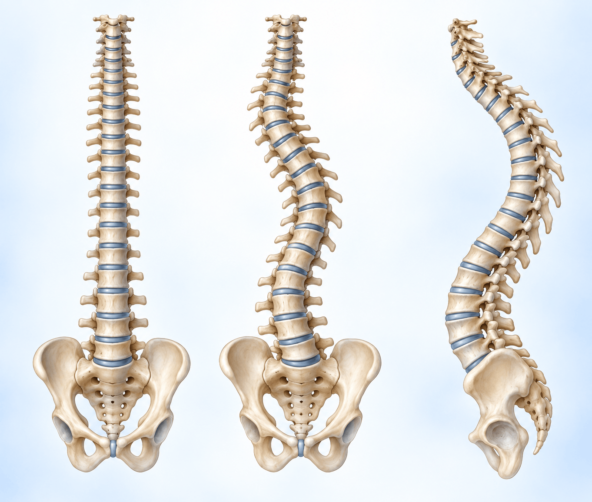
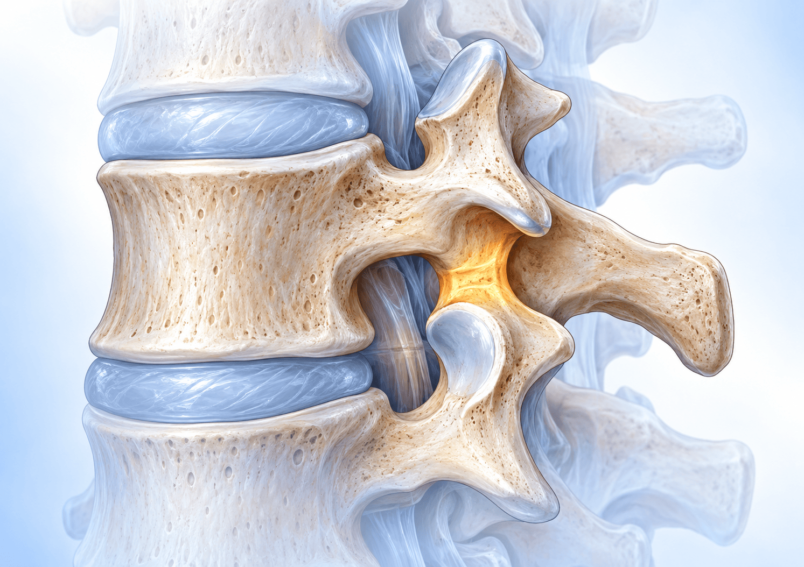

요통 영상검사:
언제 찍고 무엇을 볼까
병력 청취에서 단순 X-ray 판독, 위험 신호 질환의 영상 소견까지

CHAPTER 01 · 병력 청취
영상보다 먼저 병력을 듣는다
당연한 것이지만 영상에 지나치게 의존하지 않는다 — 대부분은 병력 청취만 잘해도 진단에 접근할 수 있다
통증의 부위, 정도, 발생 시기를 필수 항목으로 파악한다.
대개 허리 통증은 쉴 때 완화된다. 쉬어도 완화되지 않으면 감염·종양 같은 다른 원인을 의심한다.
아프다·땡긴다는 nociceptive, 저리다·따끔거린다는 neuropathic 성분이 많다고 본다.
암 병력(Cancer Hx)과 대상포진(Herpes zoster) 병력을 확인한다.
필수 항목: 부위 · 정도 · 발생 시기 · 악화 요인 · 완화 요인 · 통증의 표현 · 치료력 · 환자의 need · 기왕력
CHAPTER 02 · 통증 기전
통증의 표현으로 기전을 가늠한다
통증은 nociceptive · neuropathic · nociplastic 세 가지 기전으로 나누어 본다
| Nociceptive pain | Neuropathic pain | Nociplastic pain |
|---|
| 기전 | 특정한 침해 자극에 반응한다. Nociceptor 자극(열·기계적·화학적)이 있어야 한다. | 말초 혹은 중추 신경계의 이상 반응이며 신경계 병변이 명확하다. | 2017년 IASP가 제시한 개념. Nociceptive·neuropathic 기전으로 설명되지 않는 altered nociception(sensitization). |
|---|
| 통증 양상 | 특정 부위에 국한된다.
찌르는 듯하다, 쑤신다, 땡긴다. | 해당 신경 분절을 따라 나타난다. 전기 오는 것 같다, 화끈거린다, 따끔거린다, 저리다. | 통증에 대한 예민도가 급상승한 상태(allodynia, hyperalgesia). |
|---|
| 경과·반응 | 대개 시간이 지나면서 좋아지고 기존 analgesics(NSAID 등)에 잘 반응한다. | 거의 만성적으로 나타나고 기존 analgesics에 잘 반응하지 않는다. | 아직 확실한 치료가 알려져 있지 않다. |
|---|
| 대표 예 | Osteoarthritis | Post-herpetic neuralgia — 허리 디스크는 신경근 분포를 따라 허벅지~종아리 통증 | 경미한 추돌 뒤 온몸 통증, MRI는 퇴행성 변화 외 큰 이상 없고 마약성 진통제에도 조절 불량 |
|---|
요통은 nociceptive와 neuropathic이 섞인 mixed pain 양상이 흔하며, 만성화에는 sensitization이 관여한다.
CHAPTER 03 · 영상이 정상일 때
영상은 문제가 없는데 계속 아프다면
경미한 추돌 뒤 온몸이 아프고 MRI에서 큰 이상이 없던 연자의 경험 증례에서 출발한 설명이다
Central sensitization이 되면 따라오는 증상
뇌 활성이 한 부위가 아니라 여러 부위에서 나타나는 상태
- 기존 치료에 반응 없음 — 약, 주사 등에 전혀 반응하지 않는다
- 수면 장애 — 항상 따라오는 경우가 많다
- 우울증(기분 장애) — 적극적인 치료가 필요하다
- Doctor shopping — 영상은 문제가 없는데 계속 아파서 확인하려고 여러 의사를 찾는다
Central sensitization syndromes(CSS)로 묶어 설명한다
- 만성 통증뿐 아니라 우울 장애, 수면 장애, 턱관절 통증, 과민성 장 증후군 등이 한 증후군으로 설명된다
- 수면 장애·우울증을 적극적으로 치료하면 통증 정도가 많이 감소하는 것을 경험한다
- 필요하면 정신건강의학과 consultation을 많이 시행한다
- 영상 소견과 증상이 맞지 않는 이유를 환자에게 설명하려고 노력한다
영상 이상 유무만으로 통증을 설명하지 않는다 — 수면 장애·우울증을 함께 보고 적극적으로 치료한다.
CHAPTER 04 · 영상 진단
허리 통증의 진단은 X-ray가 기본이다
서서 찍을 수 있고 움직임을 볼 수 있다는 점이 MRI·CT가 대신할 수 없는 장점이다
MRI·CT는 누워서 찍지만 환자는 대개 서서 걸을 때 아프다. 서서 찍으면 척추 배열과 불안정성을 확인한다.
구부리고 찍고 펴고 찍어 특정 자세를 볼 수 있다.
MRI나 CT는 계속 찍을 수 없지만 X-ray는 추적 관찰에 쓰기 쉽다.
X-ray만 봐도 환자 상태의 많은 부분을 예측할 수 있다.

그림: 서서 찍는 X-ray와 누워서 찍는 MRI의 촬영 자세 차이. 가장 큰 오해 — MRI(혹은 CT)가 있으니 X-ray는 안 찍어도 된다는 생각이다. MRI·CT보다 X-ray에서 얻는 정보가 상당히 많다.
AP·Lateral에 flexion·extension까지 네 장 정도를 찍으면 많은 정보를 얻을 수 있다.
CHAPTER 05 · 촬영 구성
서서 찍는 네 장이 기본, 분리증이 의심되면 사위상
요추 X-ray: L-spine AP/Lat(standing) + Flexion/Extension — 이 정도 네 장이면 많은 정보를 얻는다
사위상(oblique view)은 routine 촬영이 아니다 — 척추 분리증이 의심될 때 L-spine both oblique를 추가한다.
CHAPTER 06 · X-ray 판독 ①
X-ray에서 볼 것 ① 척추 배열
정면상과 측면상, 전신 촬영으로 배열이 똑바른지 휘었는지 먼저 본다

퇴행성 측만증(degenerative scoliosis) 똑바른지를 본다. 육안으로도 휘어 있고 4년 뒤 배열이 완전히 무너진 예가 있다. 전신 촬영을 하면 배열이 더 확실하며 X-ray만으로 진단한다.
퇴행성 후만증(degenerative kyphosis) 측면상에서 앞으로 굽어 있다. 몸의 스트레스가 엉치 쪽에 집중되어 buttock pain이 심하고 오래 걷기 힘들다.
Sciatic scoliosis · sciatic list 디스크 자극을 피하려고 허리가 틀어진다. 증상이 사라지고 치료가 잘되면 똑바로 돌아오는 가역적 변화다.
배열만 봐도 증상과 상황이 대충 예측된다 — 퇴행성 측만증·후만증, 디스크에 의한 sciatic list.
CHAPTER 07 · X-ray 판독 ②
X-ray에서 볼 것 ② 불안정성과 추간 간격
굴곡·신전 촬영으로 밀림을, 추간 간격의 좌우 차이로 신경근 압박을 예측한다
Flexion view에서 L5 vertebral body에 대해 L4가 앞쪽으로 밀린다. 퇴행성 전방 전위증(degenerative spondylolisthesis)이며, 불안정성뿐 아니라 MRI에서 협착증을 동반하는 경우가 많아 주의 깊게 본다.
Body 사이의 빈 공간(disc space)이 주변보다 좁아졌는지, 좌우를 비교한다. 좁아진 쪽은 추간공에서 신경근이 눌려 하지 통증이 생길 가능성이 크다. 연자의 예: 좌측 L4-5 추간공 협착증으로 증상과 일치했다.
굴곡상의 밀림과 추간 간격 감소는 MRI에서 확인할 협착·신경근 압박의 단서가 된다.
CHAPTER 08 · X-ray 판독 ③
X-ray에서 볼 것 ③ 척추경 소실 — winking owl sign
척추경(pedicle)이 사라지면 뼈가 파괴된 것이며 종양이나 염증을 먼저 생각한다
정면상에서 척추경(pedicle)은 양쪽에 눈처럼 보인다. 한쪽 척추경의 shadow가 사라지면 올빼미가 한쪽 눈을 윙크한 것 같다 하여 winking owl sign(one-eyed vertebra)이라 한다.
척추경은 vertebral body와 후방 구조물을 연결하는 구조다. 종양이나 염증으로 파괴되어 녹으면 사라져 보이며, 종양을 의심한다.
CT나 MRI가 원활하지 않던 시절에 X-ray만으로 감별하려던 sign이다. 현대에는 대부분 추가 검사를 하므로 그렇게 중요하지는 않다.
Pedicle shadow 소실은 종양·염증에 의한 파괴를 뜻한다 — 의심되면 추가 검사를 해 볼 수 있다.
CHAPTER 09 · 요통의 원인 질환
요통을 일으키는 질환과 내과의 시선
강의가 짚은 대표 질환 일곱 가지를 시간 긴급도와 내과에서의 중요도로 나누어 본다
급하지 않아 수술 여부를 초·분 단위로 다투지 않는다
- 척추 관절염 — 후관절·디스크 퇴행
- 추간판 탈출증 — 허리 디스크
- 척추관 협착증 — 협착증 자체는 허리 통증과 직접적 관련이 없다
- 척추 분리증 · 요추 전방 전위증
가끔 있지만 놓치지 않아야 한다
- 척추 종양 — 악성 종양 병력, 야간·안정 시 통증
- 압박 골절
- 척추 감염 — 화농성·결핵성 척추염
- 비전형적 통증(야간통, 안정 시에도 극심한 통증)은 감염·종양을 의심한다
내과 선생님이 중요하게 보셔야 할 질환은 척추 종양·골절·감염이다.
CHAPTER 10 · 관절염
요추 관절염: 움직일 때 아프고 쉬면 완화된다
영상에서는 추간 간격 감소와 경화성 변화, facet joint의 변화로 나타난다
Facet joint OA와 disc degeneration(bulging, annular tear 포함)이 있고, 척추 변형·협착증 등과 동반되기도 한다.
보통 움직일 때 통증이 오고, 누워서 쉬면 완화된다.
보통 수술적 치료의 대상은 아니며 Medication, Exercise, PTx, injection 등을 한다.
| 영상 | 소견 |
|---|
| X-ray | Disc space가 좁아지고 end plate에 sclerotic change가 있다. |
|---|
| CT | Facet joint가 커져 있고 sclerotic한 변화가 보인다. |
|---|
| Bone scan | Facet joint에 hot uptake가 보이면 그곳을 통증의 origin으로 볼 수 있다(nociceptive pain의 대표 예). |
|---|
만성 요통 증례에서 X-ray의 facet joint 경화성 변화와 bone scan의 같은 부위 hot uptake가 통증의 origin을 가리켰다.
CHAPTER 11 · 추간판 탈출증
추간판 탈출증의 진단 포인트
병력·이학적 검사·X-ray 세 가지가 함께 가리키는지 본다
1청장년기의 급성 요통 + 좌골 신경통 (20~40대에 흔하다)
2앉아 있을 때 통증이 심하다 — 앉은 자세가 디스크에 가장 압력이 가는 자세다
3똑바로 누워 있기를 더 힘들어한다
4Resting pain·야간통이 너무 심하면 종양·감염도 의심한다
5Straight Leg Raising test 양성 (L5, S1 root)
6X-ray에서 sciatic list(+)
SLR test는 보통 30~60도 사이에서 nerve stretching으로 통증이 심해지면 양성이다.
CHAPTER 12 · 추간판 탈출증
허리 디스크는 요통과 하지통을 함께 만든다
신경근 분포를 따라 허벅지부터 종아리까지 이어지는 통증이 전형적이다
매우 흔한 요통 및 하지 통증의 원인이며 특히 20~40대 젊은 층의 질환이다.
신경을 많이 누르면 sensory change나 motor weakness가 동반될 수 있다. 증상이 없는 경우도 많다.
통증 기전은 nociceptive와 neuropathic이 혼재된 양상이 많다.
통증 수용기 자극추간판 주위 통증 수용기에 대한 자극
신경근신경근 자체의 압박, 신장
Dorsal root ganglionChemical factor 관련
Paravertebral m.부하 증가
무증상 탈출증도 많으므로, 영상 소견은 증상·이학적 검사와 함께 판단한다.
CHAPTER 13 · 추간판 탈출증
탈출증 영상 소견과 경과: 보존적 치료가 원칙이다
연자가 제시한 증례의 교육 포인트 — 영상에서 크게 보여도 대부분 보존적 치료로 좋아진다
NSAID로 큰 효과가 없어 NSAID에 pregabalin을 더하자 효과가 있었고, 특히 허리 통증이 많이 좋아졌다. 남은 방사통은 신경 차단술로 완화했다.
하지 방사통이 생긴 다음 날부터 발목 힘이 떨어졌고, 디스크가 rupture되어 아래로 흘러내린 소견이었다. 통증만 있을 때는 보존적 치료, 힘이 떨어지거나 마비가 진행하면 수술을 계획하며, 수술 후 모든 증상이 해결되었다.
디스크가 크게 튀어나왔지만 보존적 치료만으로 7년 뒤 크기가 많이 줄고 증상도 좋아진 경우가 허다하다.
통증이 굉장히 심했으나 주사 뒤 좋아졌고, 추적 관찰에서 병변이 모두 없어졌다.
통증만 있을 때는 보존적 치료, 힘이 떨어지거나 마비가 진행할 때 수술을 계획한다.
CHAPTER 14 · 척추 분리증
척추 분리증: 성장기에 생기는 협부 결손
X-ray에서 분리된 부위가 쉽게 보여 개원의가 진단해 의뢰하는 경우가 많다

그림: 척추뼈에서 협부(pars interarticularis)의 위치. 이 부위가 끊어지는 것이 분리증이다.
Pars interarticularis defect Pars interarticularis가 분리되는 질환으로 요통의 흔한 원인이다. 인구의 5% 이상(대략 6~7%)이며 성장기에 끊어진다.
남성이 여성의 2~3배, 운동 선수에서 더 흔하다. 체조 선수처럼 반복적인 신전과 회전이 협부 결손을 만드는 stress fracture다.
분리증은 인구의 5% 이상으로 매우 흔하며, 끊어진 채로 통증이 저절로 좋아지는 경우도 있다.
CHAPTER 15 · 척추 분리증
척추 분리증의 자연 경과
끊어진 협부가 저절로 편해지기도 하고 전방 전위증으로 진행하기도 한다
전방 전위증으로 진행하는 비율은 43~74%이지만 그렇게 많이 앞으로 빠지지는 않는다(Gr 1-2).
분리 부위는 X-ray에서 쉽게 보이므로 X-ray로 진단하고 추적한다.
CHAPTER 16 · 전이성 척추 종양
전이성 척추 종양: X-ray에서 놓치지 않기
특이 증상이 별로 없어 고령에서는 의심이 중요하고, 이상한 통증이 지속되면 영상을 단계적으로 늘린다
1악성 종양의 병력
2진행성 통증과 마비
3밤에 휴식기에도 심한 통증
4X-ray에서 pedicle shadow 소실, osteolytic shadow
5특이 증상이 별로 없어
고령에서는 의심이 중요하다
1X-ray
한 달 전부터 요통, 이유 없이 다리가 둔하고 암 병력이 없는 증례 — X-ray에서 눈에 띄지 않았다
2MRI · CT
L3에 무언가 들어찬 느낌, 약간의 epidural mass, dural sac compression, osteolytic·osteoblastic component 혼재
3Bone scan
여러 뼈에서 uptake가 증가해 있었다
4추가 work-up
Prostate cancer, multiple bone metastasis로 처음 진단했다. 이상한 통증이 오래 지속되면 항상 의심한다
X-ray에서 눈에 띄지 않아도 야간·안정 시 통증과 이상 소견이 지속되면 MRI·CT·bone scan으로 넓혀 본다.
CHAPTER 17 · 척추 감염
척추 감염: 퇴행성 변화와 닮아 놓치기 쉽다
화농성·결핵성 척추염은 X-ray의 작은 단서에서 MRI로 이어진다
척추 감염은 대개 화농성 척추염과 결핵성 척추염이다. 함께 소개된 개념은 Pathogen vs. Host이다.
초기에 vague symptom일 때는 감별이 어렵고, 종양, 퇴행성 변화(Modic change), 골절과도 구별하기 어려울 때가 많다. 요통 감별 진단에 항상 의심한다.
1증상
허리 통증과 다리 저림으로 5분도 앉아 있기 힘들고 화장실 정도만 거동이 가능하다
2X-ray
L5-S1 부위가 살짝 녹아 있는 느낌이었다
3MRI
L5-S1에서 뼈가 녹아 있고 광범위하게 infection이 되어 있었다
L5-S1 부위가 녹아 보이는 X-ray 소견이 MRI를 찍는 계기가 되었다.
CHAPTER 18 · 척추 감염
만성으로 진행한 감염은 MRI 추적과 조영으로 잡았다
수년간 변화가 없던 영상이 L5-S1의 disc collapse와 marrow signal change로 바뀐 경과
약간의 disc degeneration 외 특별한 이상 없음
큰 변화 없음
계속 아파서 재촬영, 별 변화 없음
L5-S1 변화, disc collapse, marrow signal change
주변에 pus — infectious spondylitis 진단
만성 경과
급성기 염증뿐 아니라 드물게 만성적으로 염증이 생기는 경우도 있다.
조영 MRI(enhanced MRI)
Marrow signal change가 있을 때 조영 영상에서 주변 pus가 보여 감염성 척추염을 진단했다.
추적 MRI에서 새 변화가 생기면 조영 MRI로 pus 여부를 확인해 감염성 척추염을 진단한다.
CHAPTER 19 · 영상 정리
어떤 질문에 어떤 영상을 쓰는가
강의에 나온 증례에서 각 영상이 답한 내용을 모아 보면 X-ray가 출발점이다
| 영상검사 | 강의에서 확인 대상으로 든 소견 |
|---|
단순 X-ray
(standing, 굴곡·신전, 사위상) | 척추 배열(퇴행성 측만·후만, sciatic list) · 불안정성(전방 전위증) · 추간 간격 · 척추경 소실 · 분리증 · 관절염의 경화성 변화 |
|---|
| MRI | 추간판 탈출과 신경근 압박 · 협착 동반 · 추간공 협착 · 종양의 epidural mass, dural sac compression · 감염의 골 파괴, disc collapse, marrow signal change |
|---|
| CT | Facet joint 비대와 sclerotic 변화 · 종양의 osteolytic·osteoblastic component |
|---|
| Bone scan | Facet joint hot uptake(통증의 origin) · 여러 뼈 uptake 증가(다발성 골전이) |
|---|
| 조영 MRI | 주변 pus — 감염성 척추염 진단 |
|---|
서서 찍은 X-ray에서 배열·불안정성·추간 간격을 보고, 위험 신호가 있으면 MRI·CT·bone scan으로 넓힌다.
CHAPTER 20 · 치료 결정
영상 소견과 치료 결정을 연결한다
진단이 먼저이고 대부분은 보존적 치료이며, 수술은 증상과 예후를 따져 정한다
보존적 치료 실패, 극심한 통증이나 일상생활 지장, 신경학적 증상(마비) 발생. 관절염 자체로는 수술이 극히 드물고, 동반된 추간판 탈출증·협착증을 해결하기 위해 수술할 수 있다.
절대 방사선 소견만으로 수술을 결정하지 않는다. 환자의 증상과 예후를 꼼꼼히 따진다.
보존적 치료가 모두 효과가 없고 통증이 심해 10분도 걷기 힘든 경우, L5-S1의 심한 degeneration과 L4-5의 bone scan uptake 소견으로 유합술을 시행했고 만족도가 높았다.
수술은 대개 해당되지 않는다 — 탈출증·협착증의 엉치·다리 통증이나 파행, 심한 척추 변형 통증, 드물게 심한 디스크 퇴행, 감염·종양·외상일 때 고려한다.
CHAPTER 21 · 연자 Q&A
질의응답에서 연자가 답한 평가의 기준
아래 내용은 연수강좌 질의응답에서 연자가 답한 의견이며 표준 진료 권고가 아니다
연자 Q&A
협착이 오래된 환자의 발바닥 감각 저하
연수강좌 질의응답에서 연자는 다음과 같이 답했습니다.
- 증상이 협착증만으로 설명되는지 확인해 볼 필요가 있다.
- 당뇨병성 말초신경병증이나 비타민 B12 결핍이 동반된 경우가 적지 않아 HbA1c와 B12 수치를 확인하면 도움이 될 때가 있다.
- Tibial nerve 등 말초신경 대상 치료의 효과를 뒷받침하는 연구가 이 환자군에서는 충분하지 않다.
- 가장 큰 문제는 낙상 위험 증가이며 균형·고유감각 훈련, 편한 신발, 골밀도 관리가 필요하다.
연자 Q&A
5년 이상 보존적 치료에도 차도가 없는 협착증, 전문 진료를 권해야 하나
연수강좌 질의응답에서 연자는 다음과 같이 답했습니다.
- 척추관 협착증은 만성 질환이며 갑자기 좋아지기도 나빠지기도 어렵다. 급격한 악화로 마비가 생기기도 하지만 아주 흔하지는 않다.
- 더 문제가 되는 것은 신경 증상이 서서히 악화되어 수술을 해도 chronic neuropathic pain이나 weakness가 남는 경우다.
- 몇 년 사이 크게 나빠지지 않고 유지되면 보존적 치료를 하며 지켜볼 수 있다.
- 보행 거리가 짧아지고 감각 저하·힘 빠짐이 악화되는 추세이면 척추 전문 진료가 필요하다고 판단한다.
연자는 신경 증상이 서서히 악화되는 추세인지가 전문 진료를 권하는 기준이라고 답했다.
CHAPTER 22 · 핵심 복습
강의의 핵심을 진료의 연결점으로
요통 영상검사: 언제 찍고 무엇을 볼까
병력을 충분히 듣고 서서 찍은 X-ray(AP/Lat + flexion/extension)로 시작한다. 영상에만 의존하지 않는다.
야간통, 안정 시에도 극심한 통증은 감염·종양을 의심하고 MRI·CT·bone scan으로 넓힌다.
요통 자체만으로 수술하는 경우는 드물고 영상 소견만으로 수술을 정하지 않는다.
요통은 nociceptive와 neuropathic이 혼재된 mixed pain이 흔하고, 약물·물리·운동·주사 등 보존적 치료가 기본이다.